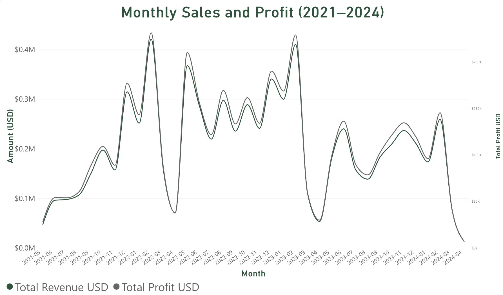

Power BI Sales Data Analysis - Ashton Hatch
How have monthly sales and profit changed from 2021 to 2024?

This line chart compares monthly sales revenue and profit from 2021 through 2024. The green line represents sales revenue, and the gray line represents the total profit using a whole separate axis.
Sales and profit changed throughout the period with several noticeable increases and decreases. Some of the highest sales months occurred in early 2022 and early 2023.
Both lines follow similar patterns, showing that months with higher sales generally also had higher profits, the chart helps show how the company's performance changed over time.
Previous Page Next Page